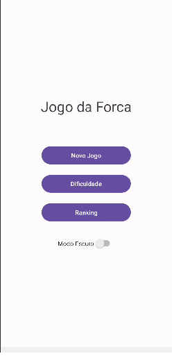

🎮 Jogo da Forca
Jogo clássico da Forca desenvolvido para Android.
🚀 Sobre o jogo
Um jogo clássico da forca onde você precisa adivinhar as palavras. Cada erro custa uma vida, e o jogador deve superar desafios para completar as palavras antes que o boneco seja finalizado.
Para continuar jogando, você pode receber recompensas assistindo a anúncios, tornando a experiência divertida e dinâmica.
🕹️ Gameplay



🕹️ Mais sobre o jogo
O jogador deve descobrir a palavra secreta antes que o boneco da forca seja completado. O jogo conta com feedback visual simples, intuitivo e desafios progressivos.
📱 Plataforma
- Android
🛠️ Tecnologias
- Android Studio
- Kotlin / Java / Flutter / Unity
📦 Status
🚧 Em desenvolvimento / 🚀 Publicado na Play Store
🔐 Política de Privacidade
Consulte a política de privacidade em: PRIVACY_POLICY.md
📥 Download
Disponível em breve na Google Play Store.